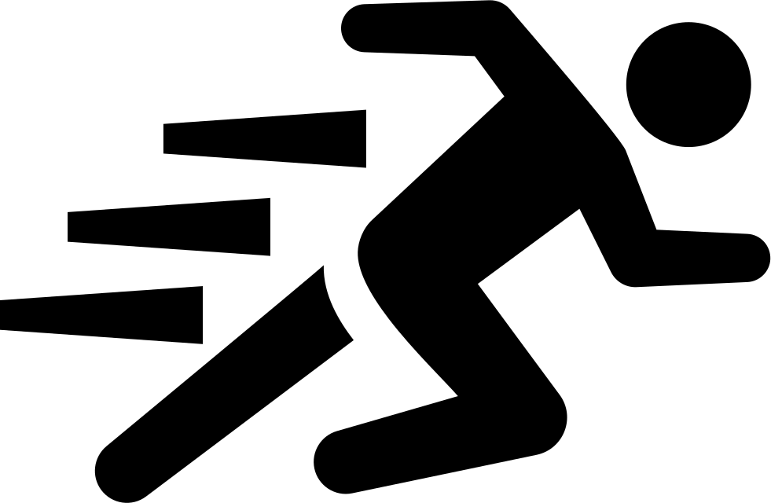

Peashooter

Sun Cost:  100
100
Damage:  10
10
Shot Cooldown:  1.4
1.4
Armor: 150
Range: Straight
Recharge:  5
5
The peashooter shoots zombies along a single lane.
"After all these years, why still shoot zombies?" Peashooter often gets asked. Some speculate it's because he didn't save enough for retirement. But the actual reason is, Peashooter's job is his favorite hobby.
Basic Zombie
Toughness: 100
Speed: 1
Damage: 20
Bite Cooldown: 0.2
TFA: 0
The basic zombie walks across the lane and bites plants.
Basic Zombie hates the term "Basic." He doesn't understand why people call him that when he's just like everyone else.
Sunflower

Sun Cost: 50
Production: 25
Sun Cooldown: 3
Armor: 150
Recharge: 5
The Sunflower generates sun which you can use to buy plants.
From fame to misfortune. Sunflower spends most her time trying to write a song as spectacular as "Zombies on My Lawn." Her most recent attempt: "Undead in my Yard."
Buckethead
Toughness: 565
Speed: 1
Damage: 20
Bite Cooldown: 0.2
TFA: 465
The buckethead zombie can take a beating and keep on ticking.
Buckethead zombie is a loner. Anyone whose ever met him describes him as "a cold zombie." Some think he was always a bad apple, but the truth is he died doing the Ice-Bucket challenge.
Wall-Nut
Sun Cost: 50
Damage: 0
Armor: 3000
Recharge: 25
The wall nut can sheild vulnerable plants from zombie attack.
Wall-Nut has a thick skin. He doesn't approve of this Snowflake Generation. That being said, he gets upset when people call him "Potato."
Football Zombie
Toughness: 625
Speed: 3, then 2
First Contact: 1500
Damage: 35
Bite Cooldown: 0.15
TFA: 475
The football zombie is fast and bulky.
Special: Deals heavy damage to the first plant it touches.
Special: Slows down after first-contact with a plant.
You might recognize this zombie as the star quaterback of the ZFL championship team. He isn't, but he looks like him.
Wall-Nut
Sun Cost: 50
Damage: 0
Armor: 3000
Recharge: 25
The wall nut can sheild vulnerable plants from zombie attack.
Wall-Nut has a thick skin. He doesn't approve of this Snowflake Generation. That being said, he gets upset when people call him "Potato."